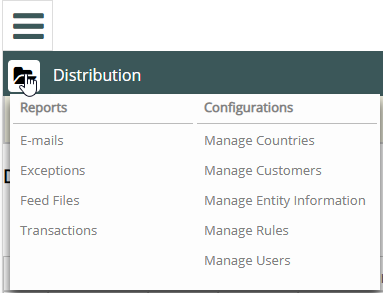

The Distribution feature provides reports about the transactions, exceptions (problems), feed files received, and emails. For any report, you can view the results directly in the app, or download the results as an XLS file.
The following Distribution reports are available:
E-mails—Lists the emails that Distribution sent. Choose from two types of reports using the drop-list—delivered email or failed email.
Exceptions—Lists errors that occurred with the attempt to distribute the SDS.
Feed Files—Lists the feed files received by the Distribution module. You can also click the Get Feed File button to process the feed file immediately.
Transactions—Lists all the transactions as reported in the feed files received by the Distribution module. For any line item in the report, click to manually resend the document.
To view Distribution reports:
From the Reports menu, select the desired report.
